上一篇博客讲在Play.preload()中把游戏需要的资源（图片，tile map文件等等）加载到内存中，今天我们将把内存中的资源显示到手机浏览器屏幕上。也就是说，今天我们终于可以看到我们的游戏界面了。
下面用到的所有图片和代码都可以在我的GitHub找到。
目标
- 用Phaser把游戏场景显示在手机浏览器上
用Chrome来模拟手机浏览器
为了测试方便，我们在PC上用Chrome浏览器来模拟手机浏览器。
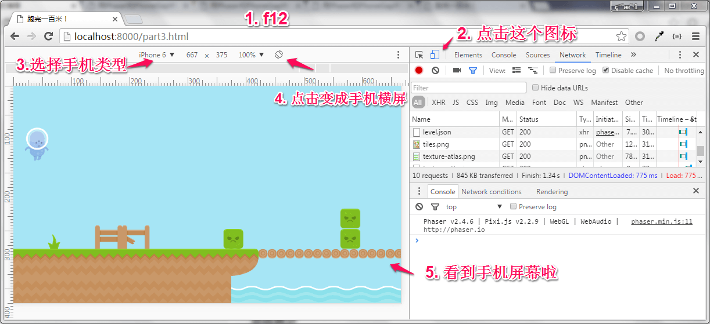
打开Chrome之后，按上图的步骤就可以模拟手机浏览器。
- 按
f12打开开发者工具 - 点击图标转换成
Device Mode - 选择
手机类型。比如iPhone 5/iPhone 6，不同手机类型的分辨率/宽高比不一样，正好可以用来测试上篇博客我们的屏幕适配是不是有效 - 默认情况显示的手机屏幕是竖屏的，我们的游戏是横屏，所以需要点击
Rotate图标把屏幕改成横屏 - 这里的区域就是手机屏幕啦
现在我们试试看能不能把上一个博客写的代码learn_to_build_a_game_with_phaser/part2.html在Chrome里面显示出来。要显示网页，我们还需要一个HTTP Server。
用Python来做HTTP Server
假设大家已经安装好Python了。我们试试看能不能显示上次的网页part2.html。操作如下：
把代码从GitHub clone到本地
1
C:\> git clone https://github.com/zhongzhu/learn_to_build_a_game_with_phaser.git
执行如下两行命令
1
2cd .\learn_to_build_a_game_with_phaser
python -m SimpleHTTPServer如果看到如下提示，就表示HTTP Server起来了，在监听8000端口。
Serving HTTP on 0.0.0.0 port 8000 …
转到Chrome浏览器，输入
http://localhost:8000/part2.html应该可以看到如下界面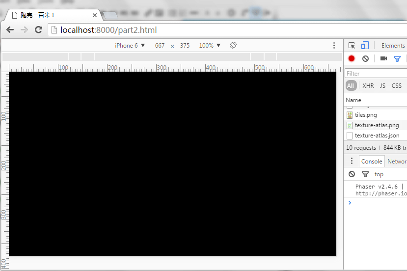
为什么是一片黑色？上一篇博客我们只讲到了如何把游戏资源加载到内存还没把它们显示出来，所以屏幕上什么都没有。下面就开始讲代码，看如何显示。
代码框架
这次的代码在learn_to_build_a_game_with_phaser/part3.html文件里。代码的框架如下
1 | <!-- the game logic 游戏逻辑--> |
显示的工作都放入了Play.create()，总共有四个任务：
- 设置游戏背景颜色
- 显示Tile Map
- 显示Enemy
- 显示Player
设置游戏背景颜色
很简单，就是把舞台stage的backgroundColor属性设为颜色的16进制值就好。
1 | // 设置游戏背景颜色 |
这里多说两句Phaser的舞台stage和世界world的关系和区别。
Phaser的world指的是整个游戏世界，而玩家能看到的部分都在舞台stage里面。你可以想象stage是一个空相框，而world是一张很大的地图，玩家用相框放在大地图上，自己能看到的部分（显示在手机上的部分）就是stage的内容，只要玩家在地图上移动相框，就能慢慢看到所有的地图内容。
当然，有的游戏（比如：2048，珠宝消除）整个游戏世界都显示在手机屏幕上，这种情况下Phaser的stage和world的物理大小是一样的。
显示Tile Map
如下，显示Tile Map总共就6行代码。
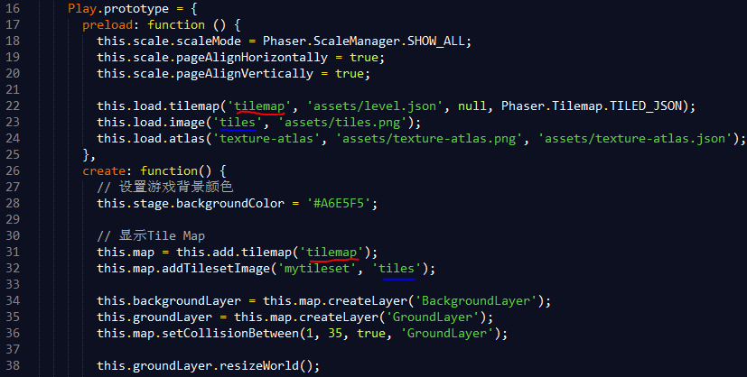
第31行，利用add.tilemap()方法生成了tilemap对象this.map。函数参数tilemap就是代码第22行的tilemap，那个JSON文件。
1 | this.map = this.add.tilemap('tilemap'); |
第32行，把tilemap需要的图片资源加载进来。函数有两个参数，第二个是代码第23行的图片资源tiles，第一个是我们在用Tiled Map Editor编辑游戏场景时给tileset取的名字，如下：
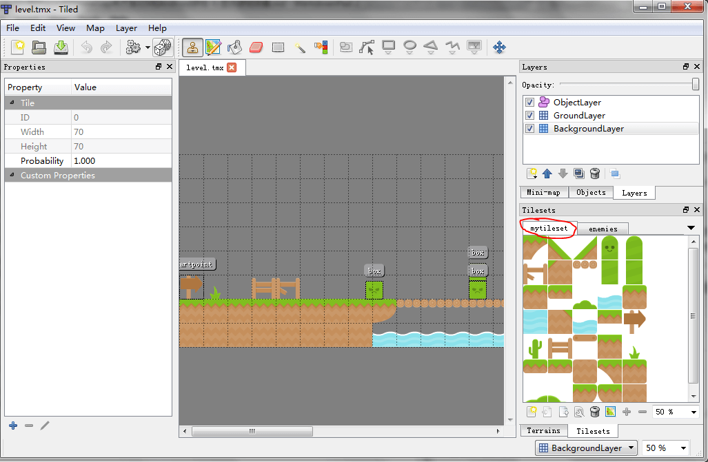
第34,35行，this.map.createLayer()方法创建了BackgroundLayer和GroundLayer，并把这两个Tile Map Layer创建并显示在了手机屏幕上。
这两个Layer的名字是我们在Tiled Map Editor里面设置的，如下：
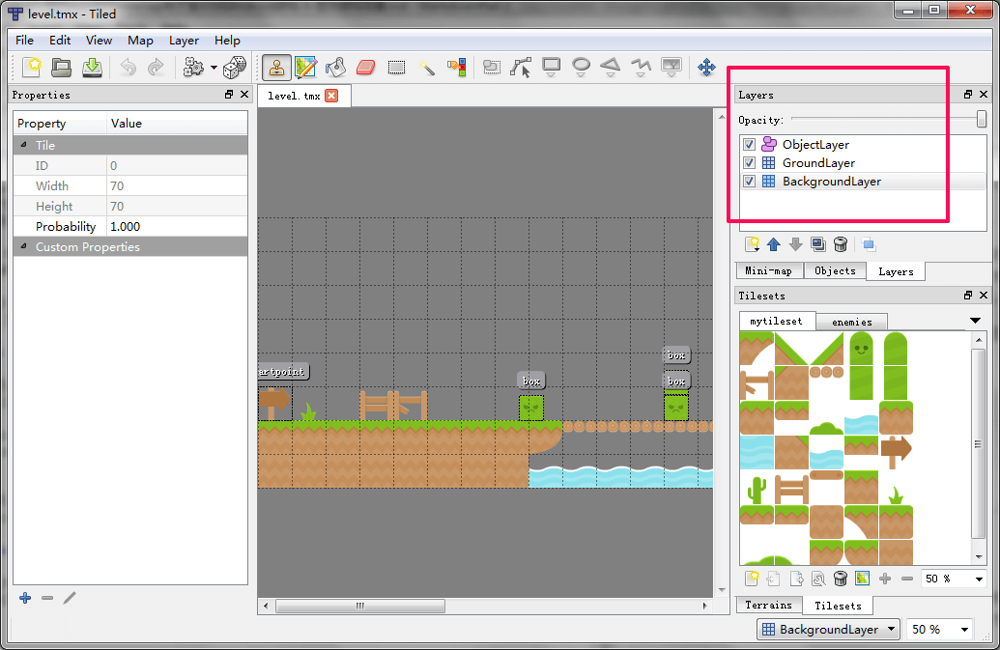
第36行，setCollisionBetween()设置我们的Player会和GroundLayer的哪些tile图片碰撞。
1 | this.map.setCollisionBetween(1, 35, true, 'GroundLayer'); |
这个碰撞是个很重要的概念，如果不setCollisionBetween()，那Player在重力的作用下就会像特异功能一样穿过我们的GroundLayer(那些草地啊，桥啊，反正Player用来走的)，直接掉下屏幕最下方消失不见。
setCollisionBetween()的头两个参数是tile小图片的下标index。下面的图就是我们所有的tile小图片了，下标从1开始，从上到下从左到右累加。比如：那个笑脸的绿色不明生物的下标就是4。
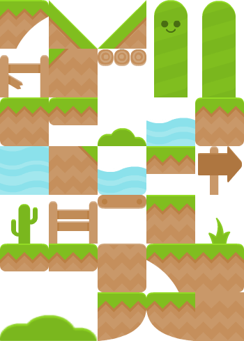
setCollisionBetween()的第三个参数表示我们要碰撞，第四个参数表示这个函数只对GroundLayer起作用。BackgroundLayer是用来做背景的，所以不需要和Player有什么碰撞了。
第38行，我们按GroundLayer的实际大小重置了world的大小。
1 | this.groundLayer.resizeWorld(); |
前面已经讲过stage和world的概念。最开始我们生成Game对象的时候，设置的大小是840x560，所以当时stage和world的大小一样都是840x560。
1 | var game = new Phaser.Game(840, 560, Phaser.AUTO); |
不过，我们用Tiled Map Editor编辑的游戏场景可比这个大多了，有2310x560这么大。调用resizeWorld()后，stage也就是我们看世界的窗口依然是840x560，但是我们的世界world已经变成2310x560了。
显示Enemy
游戏里的敌人Enemy只有一种：很凶的绿色的盒子。下面的代码介绍了如何生成敌人。
1 | this.enemyGroup = this.game.add.group(); |
第1行，利用add.group()生成了一个this.enemyGroup组Group。如下图所示，游戏里有很多的Enemy，如果要一个一个去生成，那太麻烦了。而且，每个Enemy和Player之间的关系都一样（Player撞到Enemy就重头来过），所以把所有的Enemy放在一个组里统一对待是个很好的选择。
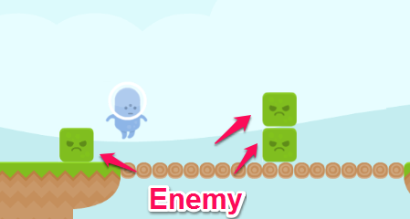
第2行，Group的enableBody设为true。这是给Group里的所有Enemy都加上可以物理碰撞身体（physics body）。正如前面GroundLayer加上Collision一样，给Enemy加上Body才会让Phaser知道Player和Enemy可以碰撞并通知游戏程序来处理。假如没有Body，Player就会径直穿过Enemy的身体，看起来就像科幻动画了。
第3-6行，用Tilemap.createFromObjects()方法创建所有的Enemy对象并显示在手机屏幕上。这个方法有7个参数，我们一个一个来讲讲。
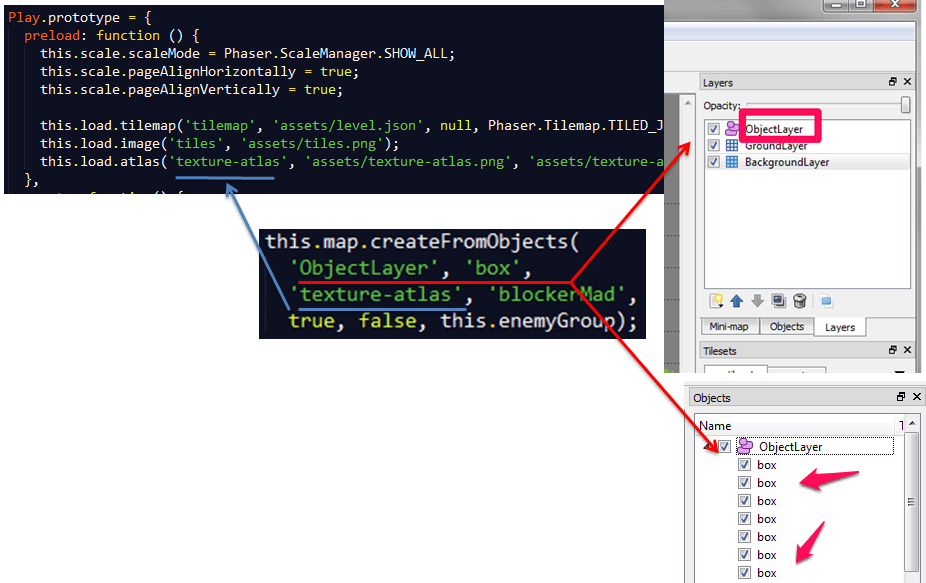
'ObjectLayer', 'box'：看上图，ObjectLayer是前面用Tiled Map Editor创建的放各种精灵的层，ObjectLayer里的所有Enemy都给取名叫box。
'texture-atlas', 'blockerMad'： texture-atlas是Play.preload()里加载到内存的texture-atlas.png的名字。blockerMad是Enemy小图片在texture-atlas.json里的名字。
这4个参数的意思就是：把tile map里ObjectLayer上叫做box的对象全部用texture-atlas.png里叫blockerMad的小图片来绘制到屏幕上。
this.enemyGroup：把创建出来的对象都加到enemyGroup组里。
显示Player
1 | this.player = this.add.sprite(60, 150, 'texture-atlas', 'alienBlue_walk2'); |
第1行，把精灵(sprite)显示在坐标X轴：60, Y轴：150。我们在texture-atlas.png里保存了好几帧和Player相关的图片。初始化用的是如下的alienBlue_walk2。
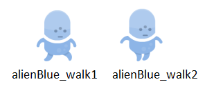
第2行，anchor是sprite图片的基准点，如果把anchor设为(0,0)表示用图片的左上角做基准点把图片放到stage上。设为(0.5,0.5)表示用图片的中心作为基准点。下面的图展示了不同anchor值，sprite在stage上摆放位置的不同。
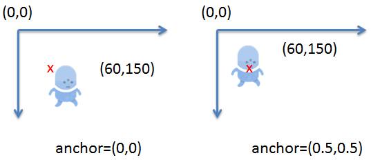
第3行，player.animations.add()给Player增加动画效果。动画取名叫walking，利用了alienBlue_walk1和alienBlue_walk2两帧图片循环播放。播放速度5帧/秒。这里add()只是生成了动画，还没有正式开始播放。需要后面player.animations.play()动画才真正能动起来。
第5行，给Player加上物理特性。这样它就会有Body及其各种重力、碰撞、速度等等。
第6行，Player的Y轴重力加速度为1000。这样Player就会像真实的世界一样，从屏幕的(60,150)坐标往下落。当然，他不会落到底，他会和GroundLayer碰撞，然后站在GroundLayer上。
第7行，让游戏的镜头(camera)跟随Player。前面讲到world很大，stage只是玩家能看到的一个小相框里的东西，Player在游戏里奔跑时我们就得横着移动小相框让玩家能看到Player当前所在地点的地图。在Phaser里，没有移动相框的函数，而是移动镜头，让镜头跟随Player。
试试我们的代码
现在打开Chrome浏览器，输入http://localhost:8000/part3.html应该可以看到如下界面：
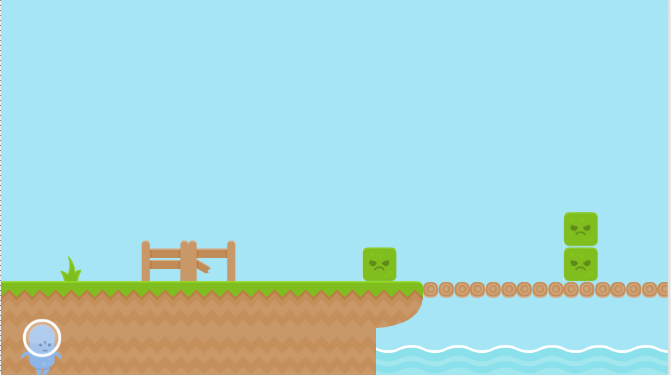
等等，为什么Player还是穿过GroundLayer掉到屏幕下方去了？其实我们还少写列两行代码。
最后的两行代码
现在让我们来加入最后的两行代码。
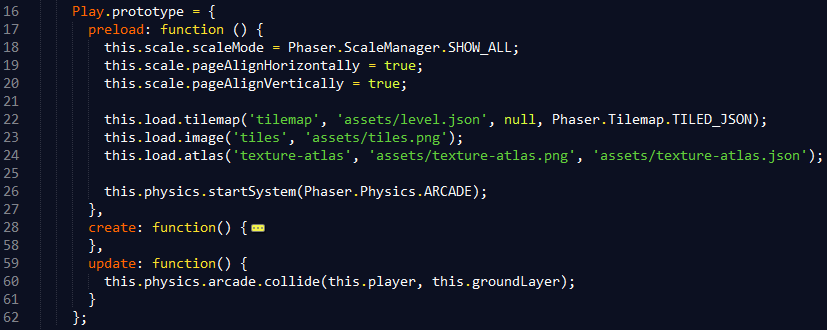
第26行，让游戏用Arcade物理系统。Phaser支持好几种物理系统，比如Arcade、P2和Ninja。其中以Arcade最简单，它只能判断方形物体的碰撞。如果要做愤怒小鸟之类的游戏，就牵涉多边形/圆形/物体旋转时的碰撞，那就得需要更高级的P2或者Ninja物理系统才行了。我们的碰撞都是方形的，用Arcade简单实用。
第59-61行，我们实现了一个新的方法Play.update()。一般讲游戏的性能都说FPS(Frame Per Second)，每秒多少帧。如果游戏FPS=30，那Phaser每秒钟就会调用Play.update()30次。我们一般会在update()里加入各种碰撞测试和碰撞成功后的回调函数。
第60行，physics.arcade.collide()检测Player和GroundLayer之间的碰撞。如果检测到了碰撞，Player就会站立在GroundLayer上，而不是掉到屏幕下方去。
再试试我们的代码
现在打开Chrome浏览器，输入http://localhost:8000/part3.html应该可以看到如下界面：
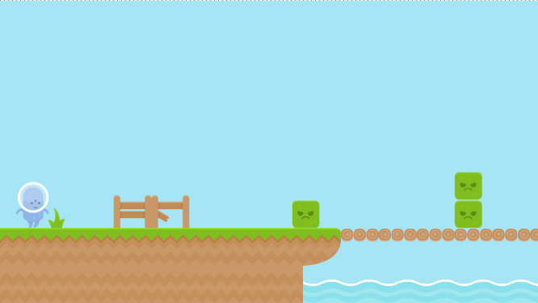
看来我们已经成功了，不是吗？Player稳稳地站在了草地上，耶！
今天就到这里了
这篇博客我们讲了如何把游戏场景显示在手机浏览器上，下次我们讲如何让Player跑和跳。